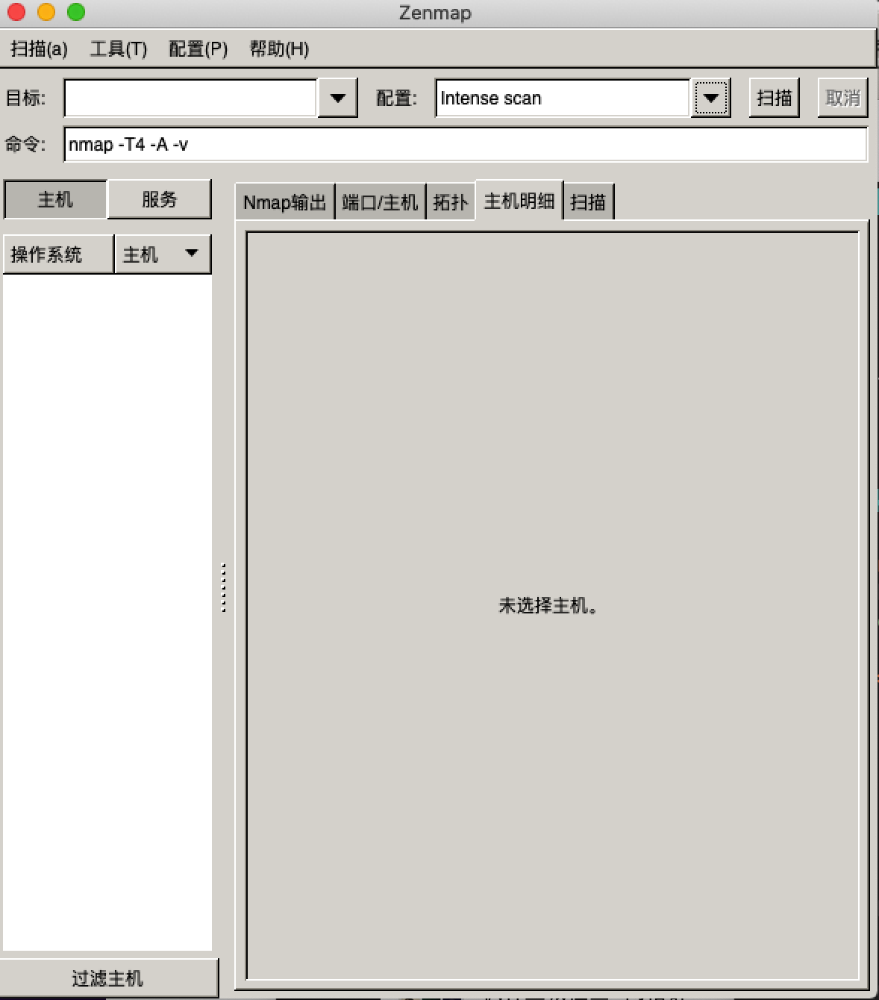

导语：工作中，经常用到Nmap去检查端口，探测主机服务。实际上，Nmap除了这些，其他的功能也非常强大，扩展性非常强。你大概不能想到Nmap还能连接数据库查询表数据，执行相关sql。
介绍
Nmap 能够快速发现活动的主机和与该主机相关联的服务。Nmap 的功能还可以通过结合 Nmap 脚本引擎（ NSE）进一步被扩展。Nmap还有图形界面Zenmap，可以通过图形界面学习命令行nmap的使用，降低了学习成本。
快速上手
快速上手的方法，无他，多看文档。如下是相关文档：
如果你想多了解就查看文档吧，多说也是对文档的重复。
脚本引擎NSE
Nmap扩展性强的地方是能够通过脚本引擎扩展功能（NSE），脚本都是通过lua语言编写，下面展示下mysql-info这个脚本查看mysql的相关信息(ip地址用XXX.XXX.XXX.XXX标识)：
1
2
3
4
5
6
7
8
9
10
11
12
13
14
15
16
17
18
19
20
21
22
23
| ➜ nmap --script mysql-info XXX.XXX.XXX.XXX
Starting Nmap 7.80 ( https://nmap.org ) at 2020-07-17 16:19 CST
Nmap scan report for XXX.XXX.XXX.XXX
Host is up (0.030s latency).
Not shown: 995 filtered ports
PORT STATE SERVICE
22/tcp open ssh
53/tcp open domain
80/tcp open http
443/tcp open https
3306/tcp open mysql
| mysql-info:
| Protocol: 10
| Version: 5.7.24-0ubuntu0.16.04.1-log
| Thread ID: 8732
| Capabilities flags: 63487
| Some Capabilities: DontAllowDatabaseTableColumn, Support41Auth, LongColumnFlag, LongPassword, SupportsLoadDataLocal, ConnectWithDatabase, Speaks41ProtocolOld, SupportsTransactions, IgnoreSpaceBeforeParenthesis, FoundRows, ODBCClient, InteractiveClient, Speaks41ProtocolNew, SupportsCompression, IgnoreSigpipes, SupportsMultipleResults, SupportsMultipleStatments, SupportsAuthPlugins
| Status: Autocommit
| Salt:
| \x14]jy6vmpQ<@vJv\x1F,\x15\x7F&
|_ Auth Plugin Name: mysql_native_password
Nmap done: 1 IP address (1 host up) scanned in 7.72 seconds
|
脚本扩展了非常多的功能，包括mysql mongo ssh snmp smb http pop3 等各种软件及协议的支持。
Zenmap优势
多说一点Zenmap的优势：
- 通过图形界面可以实时查看命令的组成变化。
- 可以在扫描一个网段后生成拓扑图
- 可以将常用的命令保存为配置，后面不用重复写复杂的Nmap命令
实际在mac上使用，发现并不稳定。非常容易卡死，也可能是我更新系统版本的原因，所以还是推荐在Linux和windows环境上使用吧。

Nmap相关项目
项目：将nmap报告转换为XLS的Python脚本
nmap-converter
项目：专门用于开发Nmap脚本的IDE
Halcyon
本文标题：Nmap资料整理
文章作者：bellpost
发布时间：2020-07-17
最后更新：2020-07-17
原始链接：https://bellpost@github.io/2020/07/17/understanding-nmap/
版权声明：本博客所有文章除特别声明外，均采用 CC BY-NC-SA 3.0 CN 许可协议。转载请注明出处！